by Yuxin Cao (cao224@wisc.edu) and John Petrakian (petrakian@wisc.edu)
Oftentimes, companies will have a physical product that consumers will purchase then post about on social media. In order to find these posts, companies could look at the tags linked to the image. However, with a large number of social media posts related to a certain product, it may be inefficient for companies to hire someone to go through each post and determine how consumers react to these products when they could use Computer Vision to do that work for them. The ability to understand how customers respond to products is an essential factor needed for a company to be successful. Through analyzing customer feedback and reactions, companies can get a better idea of their products’ success as well as get new ideas based on customer reactions that they could incorporate into future products to increase the number of consumers as well as customer satisfaction.
Through solving this issue, companies could have a tool at their disposal that allows them to see how people respond and react to their product on social media using an automated process. Otherwise, companies would have to give someone a role in which they have to manually go through social media platforms post by post. This could be both costly for companies and a repetitive job for whoever is in that role. As such, whoever would have been assigned to such a role could work on something more meaningful and exciting while saving companies money. Additionally, we would ensure that this software program has a high enough level of certainty when analyzing images so that companies can rest assured that they can trust the results produced by the software.
CNN is the most typical classification model for emotion recognition. A CNN model includes convolutional layers, pooling layers, and a fully connected layer. CNN can be used to detect patterns in the image and extract features for classification. There are different activation functions such as Sigmoid activation function and Rectified Linear Unit (ReLU) activation. Usual pooling methods include average and max pooling.
Many CNN variants can achieve a higher accuracy than the baseline CNN. There are models that ensemble several separate CNNs to improve performance. On the popular FER2013 dataset, this CNN variant can achieve an accuracy rate of 62.44%.
Some other ensemble models are able to achieve a higher accuracy than CNN on the same dataset, such as 71.20% of CNN + SVM, 71.6% of Inception, 72.40% of ResNet, and 73.28% of VGG
We can use the classification accuracy (i.e. the percentage of correctly predicted emotions) on the testing dataset to evaluate the performance of our model. We plan to show several emotion prediction examples (e.g. input an image and our model will output a label for the image) and compare with the true label to illustrate the performance of our model. Other ideas have been mentioned above.
October 6 - Proposal
October 15 - Find the dataset
November 1 - Rough draft/code of baseline model
November 10 - Midterm Report
November 20 - Complete the implementations of all models
November 25 - Have a working web page
November 30 - Have a demonstration/presentation video
December 6-15 - Final Presentation
December 15 - Finalize Project Webpage
FER-2013 (URL: https://www.kaggle.com/datasets/deadskull7/fer2013)
We decided to use the classical FER-2013 dataset because it has become a benchmark for comparing the performance of different emotion recognition algorithms and models. This dataset contains 28,709 training images, 7,178 validation and testing images. The images are labeled with 7 emotions: 0 = angry, 1 = disgust, 2 = fear, 3 = happy, 4 = sad, 5 = surprise, 6 = neutral. The most prevalent emotion is happy, and the least prevalent emotion is disgust in this dataset. The images in this dataset were gathered from Google and vary in age and pose.
Below are distributions of labels in the training dataset and testing dataset:
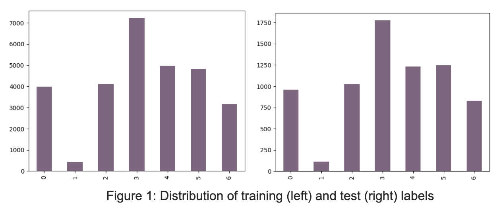We rescaled the emotions images in the dataset so that they have correct numerical image values (0-255). All training and testing images were resized to (48 x 48) so that they have the same size. The images were shuffled and the batch size is 64. Also, all images were converted into grayscale for training and testing. Below are some examples of pre-processed images (in grayscale during training and testing):
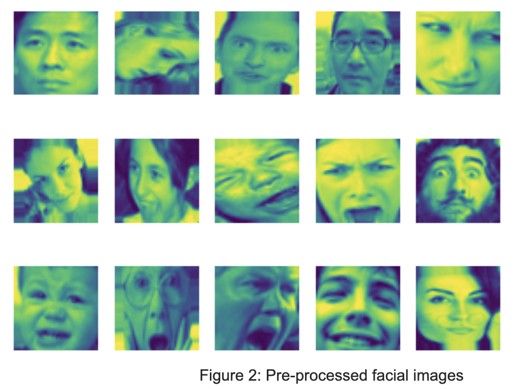We start by implementing a Convolutional Neural Network (CNN) model on the dataset FER2013 to classify each facial image into one of the seven emotion categories.
We implemented the baseline CNN model using a Sequential model in Keras. We used three blocks of 2D convolutional layers (i.e. spatial convolution for images), each with a kernel size of (3 x 3). We used the Rectified Linear Unit (ReLU) activation, which is a piecewise linear function, to make the model learn faster and perform better. Our model used the max pooling with pool size of (2 x 2) after each convolutional layer. It also used a 0.2 dropout rate as a method of regularization, which made our model more robust and less sensitive to specific weights of neurons. This should help address the problem of overfitting of our model. After the pixels were flattened, we also added three dense layers: two with ReLU activation and one with softmax.
To improve the accuracy, we then implemented the deep CNN model [Link]. The DCNN was built based on the basic CNN model, except that it added more layers to the CNN architecture. This paper proposed 3 architecture, and each is basically adding more convolutional and pooling layers to the model.
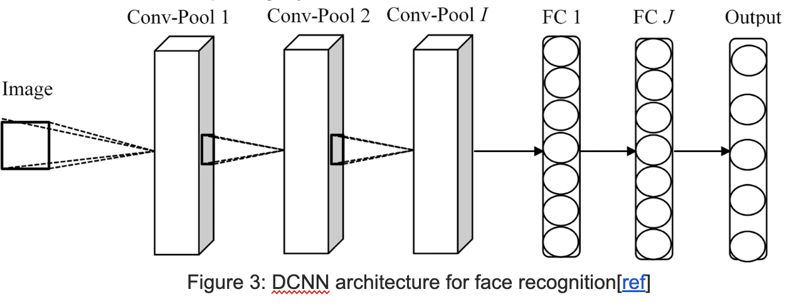Three Architectures:
Architecture #1
2 convolution layers @3 x 3 x 32 (ReLU + dropout); 1 convolution layers @3 x 3 x 64 (ReLU); 3 pooling layers @2 x 2; 2 fully-connected layer @512 & 128 (ReLU + dropout); 1 softmax layer
Architecture #2
2 convolution layers @3 x 3 x 32 (ReLU + dropout); 2 convolution layers @3 x 3 x 64 (ReLU); 4 pooling layers @2 x 2; 2 fully-connected layer @512 & 128 (ReLU + dropout); 1 softmax layer
Architecture #3
3 convolution layers @3 x 3 x 32 (ReLU + dropout); 2 convolution layers @3 x 3 x 64 (ReLU); 5 pooling layers @2 x 2; 2 fully-connected layer @512 & 128 (ReLU + dropout); 1 softmax layer
After exploring the DCNN model, we found that adding layers and tuning the hyperparameter may only increase the accuracy to a certain degree. And the CNN model (approach 1) we developed ourselves even outperformed the DCNN models in approach 2 in this particular dataset. Therefore, we decided to implement a different approach rather than simply adding more layers.
We adopted Bayesian inference on the weights of neural networks on the architecture of our first CNN model. We choose to build on top of the first model because it has higher accuracy and is a little simpler than models in the second approach.
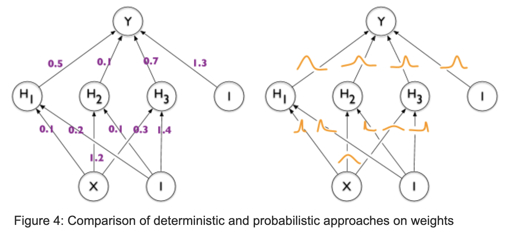The basic idea is that instead of giving each weight in the CNN a fixed value, we assign each weight a distribution, which captures the uncertainty of weights. The benefits of using Bayesian methodology in our model is that it not only correctly classifies the facial emotion but also provides a measure of how uncertain it is about the predictions. Users will be able to know the level of confidence in addition to the accuracy of the output produced by our model and they can use the results with more caution.
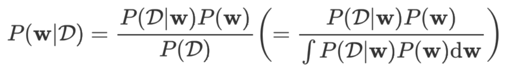D: The training data in the form (xi, yi), where xi is the input image and yi is the predicted emotion; P(w): The prior probability on weights w, which represents the initial beliefs on the distribution over the weights. We used the multivariate standard normal distribution as the kernel prior; P(D|w): The likelihood function of weights w. This is the probability of seeing the data, given a particular setting of weights; P(w|D): The posterior probability of weights w, given the observed dataset; P(D): The marginal likelihood of the training data
We initialized prior probability on weights, and we updated our priors with evidence of data and likelihood to give the posterior distribution. Since the exact updates are intractable for neural networks, we used an approximation like the gradient descent method. We maximized the evidence lower bound (ELBO-loss) which was a mean of softmax cross-entropy and KL divergence. We also did batch normalization, used the ReLU activation function, and added the flipout method to approximate a regularization method to boost the robustness of our model.
To evaluate the performance, the first approach obtained a validation accuracy of around 60.57%, which is slightly lower than the results obtained from the ensembled CNN variant (see state-of-the-art section). There is a trend that the gap between training and testing accuracy is increasing, so the first approach may suffer from overfitting.
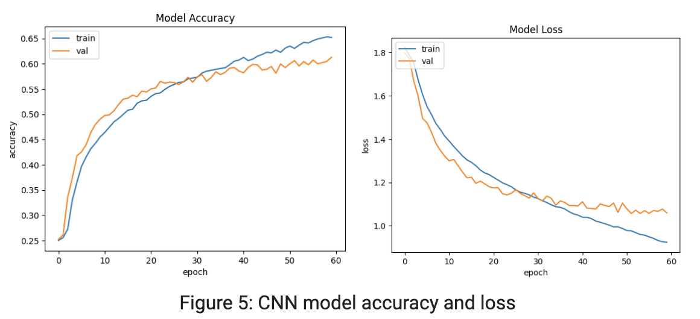After implementing the three architectures for DCNN, we found that architecture 1 achieved a test accuracy of 56.97%, architecture 2 achieved a test accuracy of 59.65%, and architecture 3 achieved a test accuracy of 59.06%. We found that adding more convolution layers indeed increased the accuracy of our model (from architecture 1 to architecture 2), but the effect became limited and even started to decrease after building the model to a certain depth. We discovered that architecture 2 actually achieved the highest accuracy.
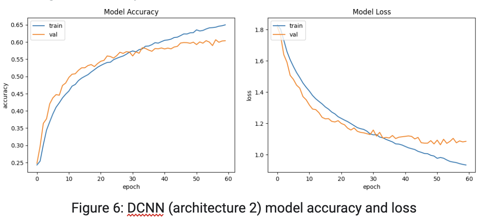Our Bayesian CNN model yields train and test accuracy around 25%, which were lower than both CNN and deep CNN models. And the accuracies across epochs were more volatile than that of our previous CNN models. We thought one cause for this result might be the prior distribution on kernels. However, there is no clear rule for choosing an appropriate prior, so the multivariate standard normal distribution we used for the kernel may not be appropriate.
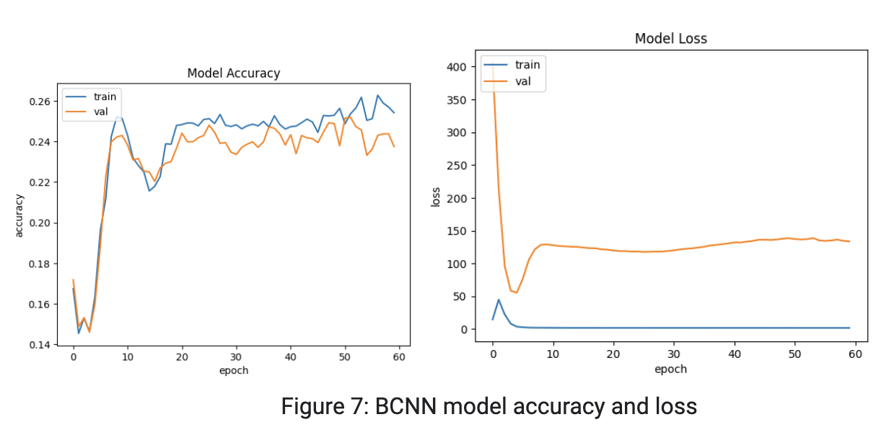Below are some examples of predictions from our Bayesian CNN model. We plotted the posterior median probability of each label. Note that our model not only outputs a distribution of labels but also generates a distribution of each label, which captures the uncertainty of our predictions and gives users more information about how certain the model is about the results. The first image was correctly classified as happy. The median probability of happy is around 0.3 (label 3). However, the second and third images were not correctly classified.
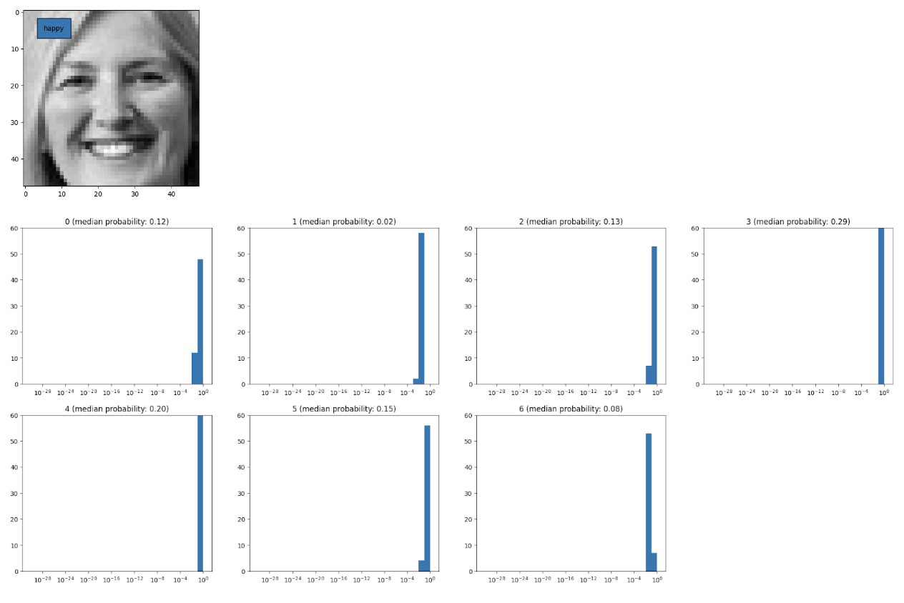 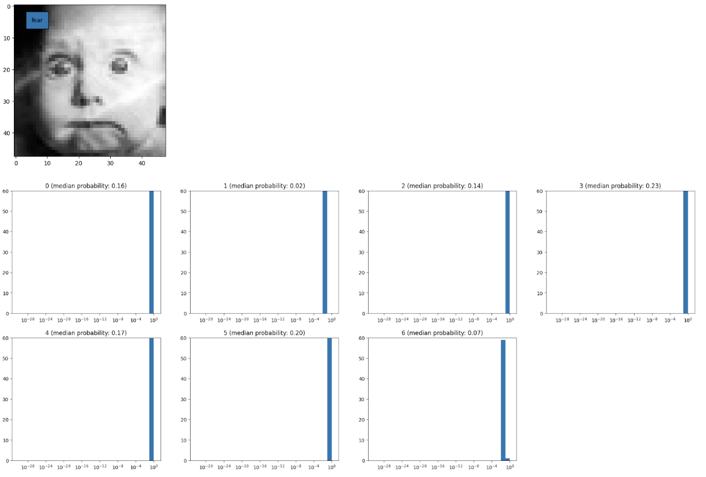 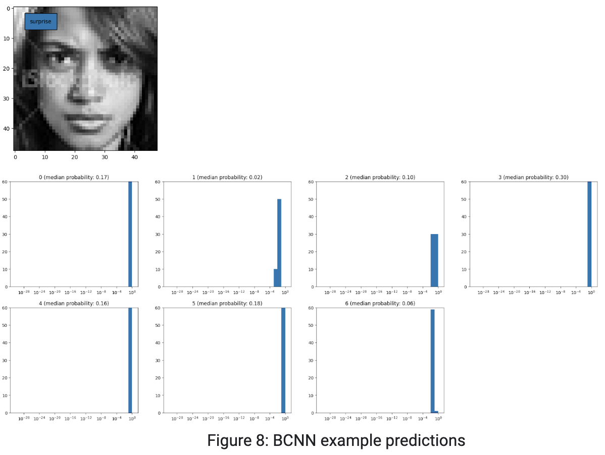One problem we encountered was the speed of training the CNN model. It takes about an hour to run the model in Python with an epoch of 60, and we were not able to use CUDA because the M1 Macbook does not support CUDA. Finally, we were able to work on the GPU and used the tensorflow. This significantly improves the speed of training the model.
Another problem was the accuracy of the model. Initially we implemented a very simple CNN model, with only one 2D convolution layer and two dense layers after the pixels were flattened. Though the training of this model is much faster, the accuracy is not satisfactory, so we continued to add layers and tune the hyperparameters.
Also, one challenge to build our BCNN model is to choose the appropriate structures/layers for the model. Initially, we wanted to implement the Bayesian CNN ourselves, but we realized that this may be very complicated to write. We then used the Convolution2DFlipout to build the layers of our BCNN model. The flipout estimator performs a Monte Carlo approximation to the distribution over kernel and bias and it has the advantage of lower variance than the reparameterization estimator.
By implementing different neural networks on emotion detection, we learned many new concepts and methods in this field. The benefits of the Bayesian convolutional neural network is that it conveys uncertainty about the weights and posterior probability of labels. This gives us more information about the performance of our model.
However, we found that training of the BCNN model was sensitive to priors for parameters, while choosing priors were somewhat arbitrary. The lack of clear information on hyperparameter selection affected the effectiveness and accuracy of our model. Due to time and computational constraints, we did not try many other distributions. In the future, we may need to train models utilizing other priors of the kernel and bias, such as the binomial distribution.
In addition, the number of samples in each emotional category differs. The number of ‘happy’ labels is way larger than that of ‘disgust’ labels. We have tried the under sampling method, but it didn’t help much with the results (even worse). In the future, we can try over-sampling and data augmentation to handle the imbalance dataset and to see if these methods improve the accuracy of our model.
Last but not least, we can also try to improve the design of our neural networks by using different architectures or design of layers. There are methods like Bayes by Backprop, and we could try to tune and improve upon these models.
Akhand, M. A. H., Shuvendu Roy, Nazmul Siddique, Md Abdus Samad Kamal, and Tetsuya Shimamura. 2021. "Facial Emotion Recognition Using Transfer Learning in the Deep CNN" Electronics 10, no. 9: 1036. https://doi.org/10.3390/electronics10091036
A. Matsui, S. Clippingdale, F. Uzawa and T. Matsumoto, "Bayesian face recognition using a Markov chain Monte Carlo method," Proceedings of the 17th International Conference on Pattern Recognition, 2004. ICPR 2004., 2004, pp. 918-921 Vol.3, doi: 10.1109/ICPR.2004.1334678.
Khaireddin, Yousif, and Zhuofa Chen. “Facial Emotion Recognition: State of the Art Performance on FER2013.” ArXiv.org, 8 May 2021, https://arxiv.org/abs/2105.03588v1.
Mehta D, Siddiqui MFH, Javaid AY. Recognition of Emotion Intensities Using Machine Learning Algorithms: A Comparative Study. Sensors (Basel). 2019 Apr 21;19(8):1897. doi: 10.3390/s19081897. PMID: 31010081; PMCID: PMC6514572.
Rajkumar, Nitarshan. “Weight Uncertainty in Neural Networks | Nitarshan Rajkumar.” Weight Uncertainty in Neural Networks, https://www.nitarshan.com/bayes-by-backprop/.
Zafar, U., Ghafoor, M., Zia, T. et al. Face recognition with Bayesian convolutional networks for robust surveillance systems. J Image Video Proc. 2019, 10 (2019). https://doi.org/10.1186/s13640-019-0406-y